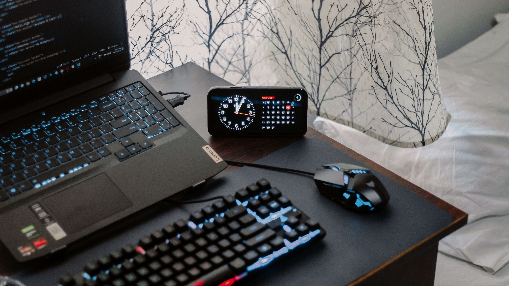

Building Habits for a Developer Life
Published on
As developers, we often focus on writing clean code, but building good habits helps us stay consistent, learn better, and grow over time.
Consistency beats perfection.
learn .build .grow

Published on
As developers, we often focus on writing clean code, but building good habits helps us stay consistent, learn better, and grow over time.
Consistency beats perfection.
"Small steps every day lead to big changes."